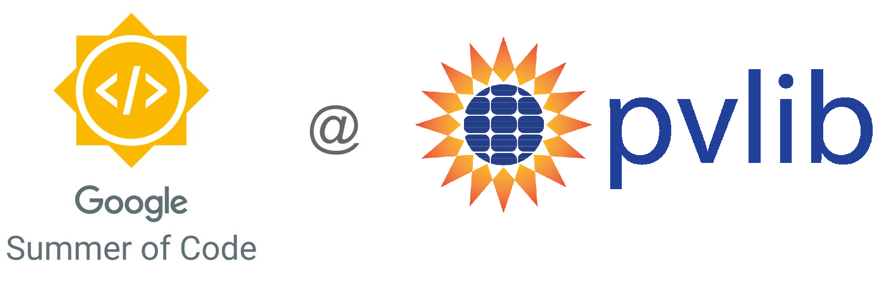

Hello!#
I’m a postdoctoral researcher at the Technical University of Denmark (DTU), working on modeling and assessment of solar energy systems and energy storage.
In this blog, I’ll share my experience as a participant in the Google Summer Of Code (GSOC).
Recent posts#
See the blog archives for all blog posts.
2024-05-24 - Google Summer Of Code 2024
I am happy to announce that for the summer of 2024, I will be participating in the Google Summer of Code (GSoC), where I will be working on a project titled Floating Solar - Enabling modeling of floating PV with pvlib. As part of my project, I will be adding floating PV temperature models in the pvlib python’s library. 
2021-08-22 - Summary of Google Summer of Code with pvlib
The coding period of this year’s Google Summer of Code (GSoC) is officially over, and it’s time to take a step back and evaluate the experience. For those of you who might not know, I’ve been working on extending pvlib’s iotools for the past 10 weeks, which I described in this blog post.